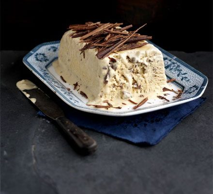

Navigation: Home >
Italian
Coffee Semifreddo

Preparation time: 20 mins
Ingredients
- 1 tbsp instant coffee
- 1 tbsp Tia Maria or brandy
- 4 large eggs, separated
- 100g golden caster sugar
- 300ml pot double cream
- 100g/4oz pack honeycomb Toblerone, finely chopped
- Dark chocolate curls, to decorate
Instructions
-
Oil and line a 1-litre loaf tin with cling film. Put the coffee, Tia
Maria or brandy, egg yolks and sugar in a bowl and stir to dissolve the
coffee. Put the egg whites in a large bowl and pour the cream in
another.
-
Beat the egg whites until stiff with an electric whisk, then quickly
beat the egg yolk mixture until thick and leaving a trail. Now beat the
cream until it holds its shape. If you beat everything in this order,
you don't need to wash the whisks in between.
-
Fold the cream into the coffee mixture, then carefully fold in the
whites. Fold through the Toblerone and tip into the loaf tin. Lightly
cover the surface with cling film. When frozen, overwrap in foil and
freeze. Will keep for up to 6 weeks. You can make the chocolate curls
(see video link, above, for instructions) and keep them in a airtight
container or freeze.
-
To serve, unwrap and turn onto a platter. Strip off the cling film and
serve topped with the chocolate curls.
Variation: Orange semifreddo
Omit the coffee and Tia Maria and replace with the zest ½ orange and an
orange liqueur like Grand Marnier. Use dark chocolate instead of
Toblerone.
Image and recipe source:
BBC Good Food